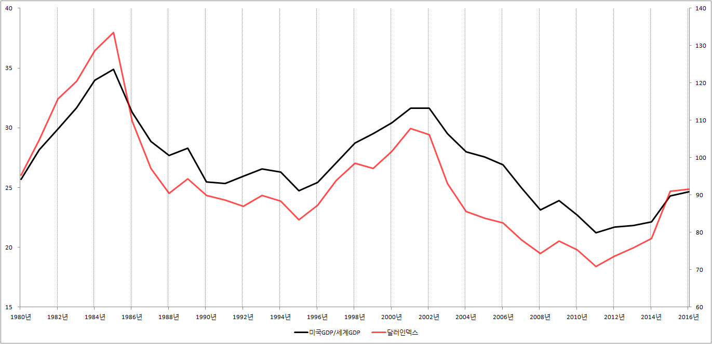
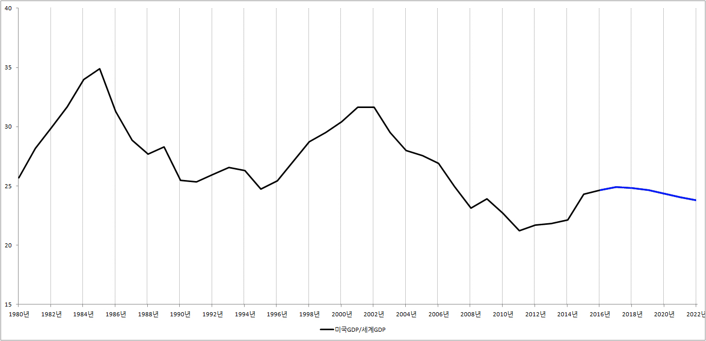

■ 미국GDP로 풀어보는 달러인덱스 전망
1.달러인덱스 뜻
달러인덱스란 미국 돈 달러의 파워가 1973년에 비해 얼마나 강해졌는지 조사를 한 것입니다. 예를 들어 1973년보다 파워가 강해졌다면 100 → 110 → 120으로 상승하고, 1973년보다 약해졌다면 100 → 90 → 80으로 하락합니다. 쉽게 말해서 지금 현재 달러인덱스 값이 103이라면 달러의 파워가 1973년보다 3정도 강해졌다는 이야기가 됩니다.
그런데 달러인덱스는 단순히 ‘달러의 파워’ 그 자체로 끝나는 것이 아닙니다. 달러인덱스는 원/달러 환율과 찰떡 궁합을 자랑하는 것으로 알려져 있습니다. 따라서 원/달러 환율전망에 관심이 많은 사람이라면 반드시 달러인덱스의 미래도 전망할 필요가 있습니다.
2.미국경제와 달러인덱스
지금 현재 미국 경제가 절대 갑이라고 합시다. 극단적으로 말해서 세상 모든 물질적 부가 미국에서 생산된다고 합시다. 그러면 달러의 파워는 어떻게 될까요? 당연히 달러는 무적이 됩니다.
하지만 미국 경제가 빌빌거린다면 어떤 일이 일어날까요? 극단적으로 말해서 미국이라는 나라가 세계에서 알아주는 극빈국이 되었다고 합시다. 그러면 달러의 파워는 어떻게 될까요? 당연히 달러는 듣보잡이 됩니다.
여기서 우리는 달러인덱스 전망과 관련된 멋진 힌트 하나를 얻을 수 있습니다. 미국 경제가 잘 나가면 달러의 파워, 유식하게 말해서 달러인덱스가 상승한다는 사실입니다. 그리고 미국 경제가 빌빌거리면 달러의 파워, 즉 달러인덱스가 하락한다는 사실입니다.
3.미국GDP 비중과 달러인덱스
전 세계에서 생산되는 모든 물질적 부의 약 25%정도는 미국에서 생산되는 것으로 알려져 있습니다. 유식하게 말해서 세계GDP 대비 미국GDP의 비중이 약 25%입니다. 하지만 이같은 비율이 항상 일정하게 유지되는 것은 아닙니다. 미국 경제가 잘 나가면 GDP비중이 30%를 넘을 때가 있고, 미국 경제가 비실비실하면 20%로 떨어질 때도 있습니다.
미국GDP 비중이 20% → 25% → 30%로 상승하면 달러인덱스는 어떻게 될까요? 너무나 쉬운 질문입니다. 미국 경제가 날개짓을 하는 만큼 달러인덱스도 상승합니다. 하지만 미국GDP 비중이 30% → 25% → 20%로 하락하면 반대의 상황이 연출됩니다. 즉 미국 경제가 비실비실 하는 만큼 달러인덱스가 하락합니다.
※ 미국GDP 비중과 달러인덱스 그래프

{kind=link}
위의 그래프를 보면 미국 경제와 달러인덱스가 찰떡 궁합인 것을 쉽게 알 수 있습니다. 따라서 달러인덱스의 미래가 궁금하다면 세계경제와 미국경제의 미래에 관심을 가질 필요가 있습니다.
그런데 여기서 문제가 발생합니다. 생활에 바쁜 우리가 어떻게 세계경제의 미래와 미국경제의 미래를 전망하고, 나아가 세계GDP와 미국GDP의 미래를 추적한단 말입니까?
바로 이때 우리가 이용할 수 있는 것이 IMF에서 매년 2회 발표하는 세계경제전망이라는 보고서입니다. 지난 2017년 4월에 발표한 보고서에는 2022년까지 세계경제가 어떤 길을 걸어갈지 전망해 놓은 자료가 있습니다. 따라서 세계경제전망 보고서를 이용하면 쉽게 미국GDP비중을 추적할 수 있습니다. IMF 세계경제 전망보고서에 나와 있는 자료를 이용해 미국GDP 비중을 다시 그려보면 다음과 같이 됩니다.
※ 미국GDP 비중 그래프

{kind=link}
그래프를 보면 2017년 이후 미국GDP비중이 점점 하락하고 있습니다. 따라서 우리는 조심스럽게 달러인덱스의 하락을 전망할수 있습니다. 하지만 미국GDP 비중이 달러인덱스의 모든 것을 설명하는 것은 아닌 관계로 틈틈이 다른 경제지표도 참조하면서 달러인덱스의 미래를 전망할 필요가 있습니다.